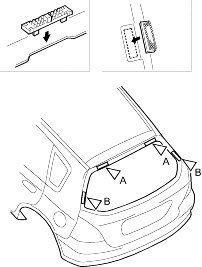
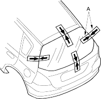
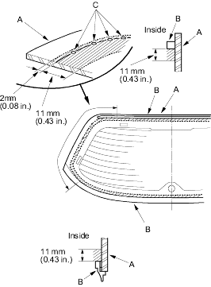

- Glue the upper fasteners (A) and side fasteners (B) to the tailgate as shown.
Fastener Locations A  : Fastener, 2
: Fastener, 2B : Fastener, 2

- Set the rear window in the opening and centre it. Make alignment marks (A) across the rear window, tailgate and body with a grease pencil at the four points shown. Be careful not to touch the rear window where adhesive will be applied.

- Remove the rear window.
- With a sponge, apply a light coat of glass primer along the edge of the rear window (A) and rubber dams (B) as shown, then lightly wipe it off with gauze or cheesecloth:
- With the printed dots (C) on the rear window as a guide, apply the glass primer to both side portions of the rear window.
- Do not apply body primer to the rear window and do not get tailgate and glass primer sponges mixed up.
- Never touch the primed surfaces with your hands. If you do, the adhesive may not bond to the rear window properly, causing a leak after the rear window is installed.
- Keep water, dust and abrasive materials away from the primed surface.
Hatched area: Apply glass primer here.
